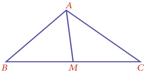
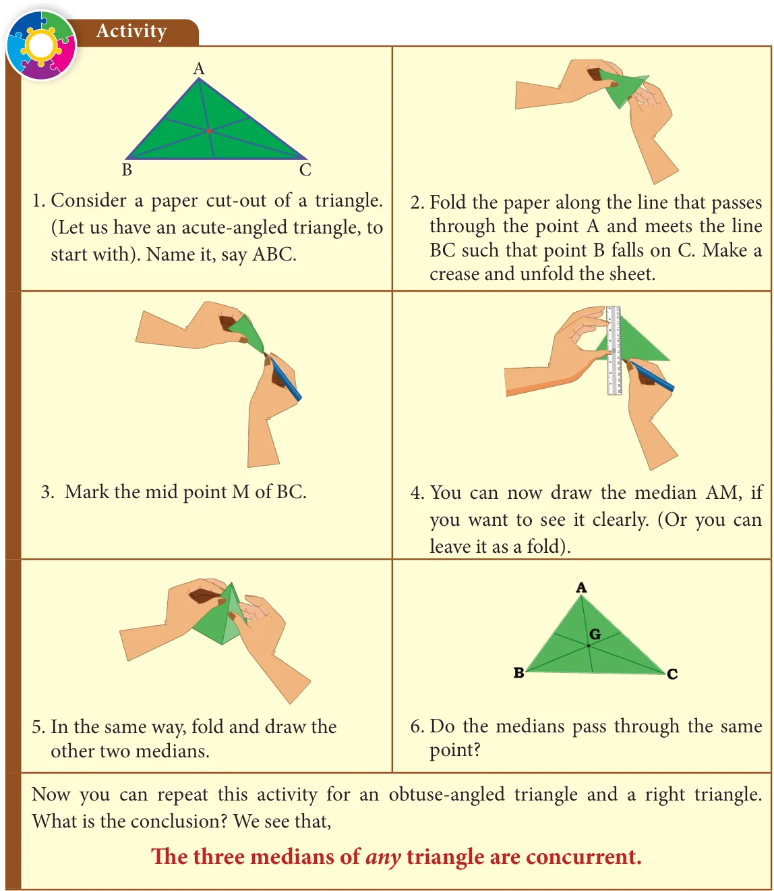
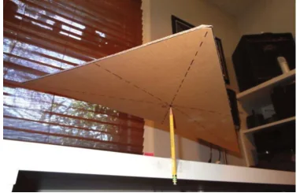
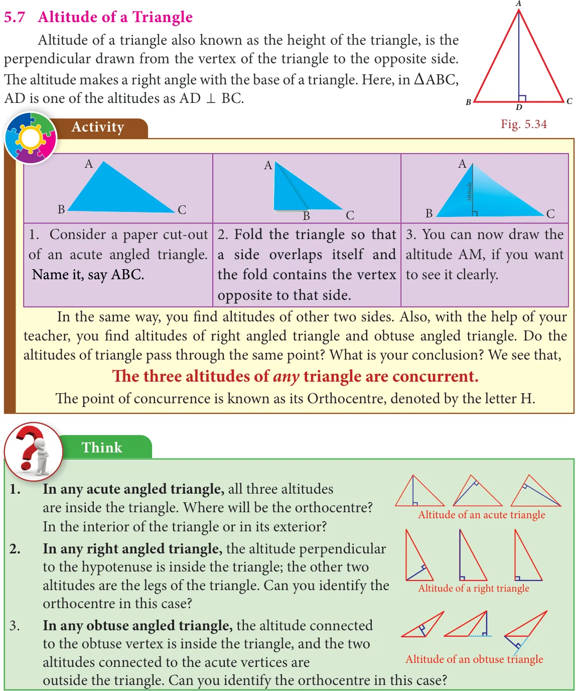

A median of a triangle is a line segment from a vertex to the midpoint of the side opposite that vertex.

In the figure AM is a median of \(\triangle ABC\). Are there any more medians for \(\triangle ABC\) ? Yes, since there are three vertices in a triangle, one can identify three medians in a triangle. Fig. 5.29
Example 5.16

In the figure, ABC is a triangle and AM is one of its medians. If \(BM = 3.5\) cm, find the length of the side BC.
AM is median M is the midpoint of BC. Fig. 5.30 Given that, \(BM \Rightarrow = 3.5\) cm, hence \(BC =\) twice the length \(BM = 2 \times 3.5\) cm \(= 7\) cm.
Solution:

5.6.1 Centroid
The point of concurrence of the three medians in a triangle is called its Centroid, denoted by the letter G. Interestingly, it happens to be the centre of mass of the triangle. One can easily verify this fact. Take a stiff cut out of triangle of paper. It can be balanced horizontally at this point on a finger tip or a pencil tip.

Should you fold all the three medians to find the centroid? Now you can explore among yourself the following questions:
- How can you find the centroid of a triangle?
- Is the centroid equidistant from the vertices?
- Is the centroid of a triangle always in its interior?
- Is there anything special about the medians of an
- Isosceles triangle? (b) Equilateral triangle?
Properties of the centroid of a triangle
The location of the centroid of a triangle exhibits some nice properties. It is always located inside the triangle. We have already seen that it serves as the Centre of gravity for any triangular lamina. Observe the figure given. The lines drawn from each vertex to G form the three triangles \(\triangle ABG\), \(\triangle BCG\), and \(\triangle CAG\). Surprisingly, the areas of these triangles are equal. Fig. 5.31 That is, the medians of a triangle divide it into three smaller triangles of equal area!

P PG : \(GD = 2:1 QG\) : \(GE = 2:1\)
The centroid of a triangle splits each of the medians in two _{R}_{G} : \(_{G}{}_{F}= 2:1\) segments, the one closer to the vertex being twice as long as the other one. F E
This means the centroid divides each median in a ratio of 2:1. (For example, GD is \(\frac{1}{3}\) of PD). (Try to verify this by paper folding). Q D R
Example 5.17
In the figure G is the centroid of the triangle XYZ. _{N} _{G} _{M}
- If \(GL = 2.5\) cm, find the length XL.
- If \(YM = 9.3\) cm, find the length GM. Y L Z
Fig. 5.32
Solution:
Therefore, we get \(1 \times\) (XG) \(= 2 \times (2.5) XG = 5\) cm. Hence, length \(XL = XG + GL = 5 + 2.5 = 7.5\) cm. \(\Rightarrow\)
- Since G is the centroid, XG : \(GL = 2\) : 1 which gives XG : \(2.5 = 2\) : 1.

- If YG is of 2 parts then GM will be 1 part. (Why?)
This means YM has 3 parts. 3 parts is 9.3 cm long. So GM (made of 1 part) must
be \(9.3 \div 3 = 3.1\) cm.
Example 5.18
ABC is a triangle and G is its centroid. If AD=12 cm, BC=8 cm and BE=9 cm,find the perimeter of DBDG .
Fig. 5.33
Solution:
ABC is a triangle and G is its centroid. If,
\(AD = 12\) cm ÞGD = of \(AD = (12 = 4\) cm) and \(BE = 9\) cmÞBG \(= 2\) of \(BE = 2(9)= 6cm\). \(\frac{1}{3} \frac{1}{3} 3 3\)
Also D is a midpoint of BC Þ \(BD = \frac{1}{2}\) of \(BC = \frac{1}{2} (8)= 4cm\). \ The perimeter of \(= BD+GD+BG = 4+4+6 = 14\) cm
